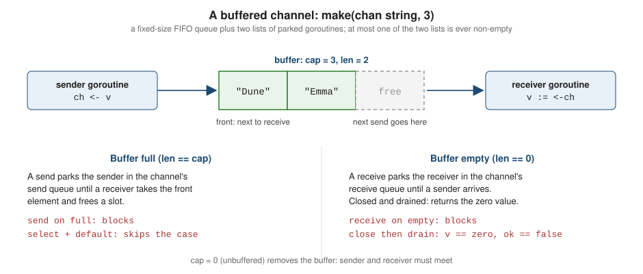
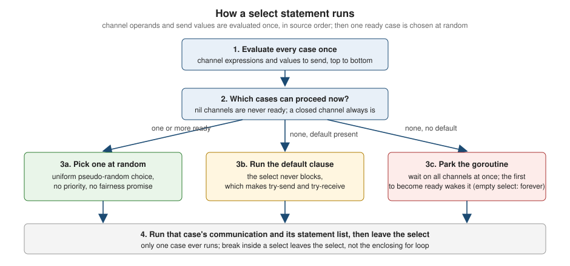

Channels and Select
|
This content was generated with the assistance of AI and should be verified against the official documentation before being relied on in production. |
This page is written against Go 1.27 (go1.27.2), checked on 2026-10-18; every go.mod shown has the line go 1.27.
A channel is a typed conduit through which one goroutine hands values to another, and select lets a goroutine wait
on several channel operations at once. Together they are Go’s built-in answer to the question "how do goroutines
communicate?", an answer taken from Hoare’s communicating sequential processes (CSP): do not communicate by sharing
memory, share memory by communicating. This page is the complete reference for both: the types and operations, the
behaviour table for every combination of nil, open and closed channels, select in all its forms, timers, deadlocks,
leaks and the race detector. The goroutines themselves are on
Goroutines and the Scheduler. Pipelines, worker
pools and cancellation built from these pieces are on
Concurrency Patterns and
Context; locks and atomics are on
Sync and Atomics; the ordering guarantees channels provide are
formalised in Memory Model and Data Races. For the
same ideas in a neighbouring language see the Rust Reference page
Threads & Message Passing, whose mpsc channels
are the closest equivalent.
Every example was compiled, vetted with go vet and run with Go 1.27.2; the output shown is the real output (the
compiler messages and panics are likewise copied from real runs). Examples whose scheduling order varies from run to
run were rewritten to print only order-independent results, so the output shown is reproducible. The go.mod of the
example module is:
module example.com/shelf
go 1.27What a channel is
A channel is a reference to a runtime object that contains a queue of values of one element type, a lock and two
lists of goroutines that are parked waiting to send or to receive. Like a map or a slice header, the channel value
is a small handle: copying it, passing it to a function or storing it in a struct yields another handle to the same
queue. The zero value of a channel type is nil, and a nil channel is a perfectly legal, if peculiar, value (see
the axioms).
Three properties make channels more than a thread-safe queue:
-
synchronisation: an unbuffered channel makes sender and receiver meet, so a successful communication is also a synchronisation point. The Go memory model (The Go Memory Model) states the resulting happens-before edges, so data written before a send is visible after the matching receive without any lock;
-
ownership transfer: sending a value, or a pointer to it, is the natural way to say "this is yours now". If the sender stops touching it afterwards, there is no sharing and so no race;
-
selection: a goroutine can wait for the first of several channel operations, with a timeout or a cancellation signal among them. No other primitive in the standard library composes like this.
Channels are not always the right tool. Protecting a counter or a cache is simpler and faster with a
sync.Mutex; the community wiki page Mutex or Channel gives the rule of thumb
that channels fit passing ownership, distributing units of work and communicating asynchronous results, while mutexes
fit caches and state. See Sync and Atomics.
Channel types and make
The specification (Channel types) defines three forms:
| Type | Meaning | Operations allowed |
|---|---|---|
|
bidirectional channel of |
send, receive, close, |
|
send-only channel of |
send, close, |
|
receive-only channel of |
receive, |
The <- operator associates with the leftmost chan it can, so chan<- chan int is a send-only channel of
bidirectional channels, chan<- <-chan int a send-only channel of receive-only channels and <-chan <-chan int a
receive-only channel of receive-only channels. Use parentheses, as in chan (<-chan int), when you want the
other reading. The element type may be anything, including another channel, a function, an interface or
struct{} (a zero-size element, used when only the event matters).
Channels are created with the built-in make
(Making slices, maps and channels):
-
make(chan T)ormake(chan T, 0)creates an unbuffered (synchronous) channel; -
make(chan T, n)creates a buffered channel with room fornvalues; -
the capacity must be a non-negative integer. A negative constant is a compile-time error and a negative run-time value panics (both are shown below).
Channel values are comparable: two channels are equal if they came from the same make call or both are nil.
They can therefore be map keys and can be compared with nil. A directional type is assignable from the bidirectional
type automatically (a function taking <-chan T accepts a chan T argument) but never the other way round, so the
direction is a one-way narrowing of a capability.
package main
import "fmt"
type LoanState int
const (
Available LoanState = iota
OnLoan
Returned
)
func (s LoanState) String() string { return [...]string{"Available", "OnLoan", "Returned"}[s] }
type event struct {
isbn string
state LoanState
}
func main() {
events := make(chan event, 4)
var nilEvents chan event
fmt.Printf("%T cap=%d nil=%t\n", events, cap(events), nilEvents == nil)
fmt.Println("comparable:", events == events, events == nilEvents)
events <- event{"978-0-441-17271-9", OnLoan}
events <- event{"978-0-441-17271-9", Returned}
close(events)
for e := range events {
fmt.Println(e.isbn, e.state)
}
chOfCh := make(chan chan int, 1) // channel of channels
inner := make(chan int, 1)
chOfCh <- inner
(<-chOfCh) <- 7
fmt.Println(<-inner)
var _ <-chan <-chan int // <-chan (<-chan int) parses right to left
}chan main.event cap=4 nil=true
comparable: true false
978-0-441-17271-9 OnLoan
978-0-441-17271-9 Returned
7Unbuffered channels: the hand-off
On an unbuffered channel a send completes only when a receiver has taken the value, and a receive completes only when a sender has supplied one. Whichever goroutine arrives first parks and waits for the other. This is why the specification calls it a synchronous channel and why the memory model lets you treat the receive as "happens before" the completion of the send.
package main
import (
"fmt"
"sync"
)
func main() {
ch := make(chan string)
var wg sync.WaitGroup
wg.Add(1)
go func() {
defer wg.Done()
fmt.Println("receiver got:", <-ch)
}()
ch <- "Dune" // returns only once the receiver has taken the value
wg.Wait()
}receiver got: DuneSource: A Tour of Go: Channels
The diagram shows the order of events when a sender arrives first, which is the common case in a pipeline.
A full worked example that iterates over a stream is in the next sections.
The example below uses a goroutine that sends two books and then closes the channel, while main ranges over it:
package main
import "fmt"
type Book struct {
Title string
Pages int
}
func main() {
books := make(chan Book) // unbuffered: capacity 0
go func() {
defer close(books)
books <- Book{"Dune", 612}
books <- Book{"Emma", 474}
}()
for b := range books {
fmt.Printf("received %q (%d pages)\n", b.Title, b.Pages)
}
fmt.Println("len:", len(books), "cap:", cap(books))
}received "Dune" (612 pages)
received "Emma" (474 pages)
len: 0 cap: 0The rules in the specification (Send statements and Receive operator) can be summarised as follows:
-
in
ch <- vthe channel expression and the value are both evaluated before communication begins; the value must be assignable to the element type; -
the send blocks until it can proceed. On an unbuffered channel that means a receiver is ready; on a buffered one it means there is a free slot;
-
<-chis an expression of the element type. It blocks until a value is available, or until the channel is closed and drained, in which case it yields the zero value; -
the value is copied. Sending a large struct copies it; sending a pointer copies the pointer and so shares the pointee, which is how data races sneak back in when the sender keeps using the pointer afterwards.
Buffered channels
A buffered channel decouples sender and receiver by the size of its buffer. A send blocks only when the buffer is full and a receive blocks only when it is empty. Values leave in the order they entered (FIFO).

The built-ins len(ch) and cap(ch) report the number of queued values and the capacity
(Length and capacity). For an unbuffered or nil channel both are zero.
Use them for metrics and diagnostics only: in a concurrent program len is stale the instant it returns, so
if len(ch) < cap(ch) { ch <- v } is a race, not a non-blocking send. Use select with default for that.
package main
import "fmt"
func main() {
queue := make(chan string, 3)
fmt.Println("len:", len(queue), "cap:", cap(queue))
queue <- "Dune"
queue <- "Emma"
fmt.Println("len:", len(queue), "cap:", cap(queue))
queue <- "Ulysses"
select {
case queue <- "Hamlet":
fmt.Println("sent Hamlet")
default:
fmt.Println("queue full, a plain send would block")
}
fmt.Println(<-queue, <-queue, <-queue)
fmt.Println("len:", len(queue), "cap:", cap(queue))
}len: 0 cap: 3
len: 2 cap: 3
queue full, a plain send would block
Dune Emma Ulysses
len: 0 cap: 3A few guidelines for choosing a capacity:
-
capacity 0 gives the strongest synchronisation and exposes missing receivers as deadlocks early; start there;
-
capacity 1 is the usual choice for a result that is delivered once, as in the
lookuphelper in the timeout example: the producer can always complete its single send and exit, even if nobody listens any more; -
a larger capacity absorbs bursts or limits concurrency (a buffered
chan struct{}is a counting semaphore, see Concurrency Patterns), but it also hides backpressure: a big buffer only delays the moment the producer notices the consumer is too slow; -
never pick a capacity "to make the deadlock go away". If the program needs the buffer to be large enough for every possible send, the buffer is acting as an unbounded queue and the design should say so.
The memory model gives a precise rule for buffered channels: the k-th receive from a channel with capacity C
happens before the (k+C)-th send on that channel completes. For C = 0 this is the hand-off rule above.
Directional channels
A function that only produces values should accept a chan<- T; one that only consumes should accept a
<-chan T. The compiler then enforces the intent, and the signature documents it.
package main
import "fmt"
func produce(out chan<- string, titles ...string) {
for _, t := range titles {
out <- t
}
close(out) // allowed on a send-only channel
}
func consume(in <-chan string) int {
n := 0
for t := range in {
fmt.Println("shelved:", t)
n++
}
return n
}
func main() {
ch := make(chan string, 4) // bidirectional
produce(ch, "Dune", "Emma", "Ulysses")
fmt.Println("count:", consume(ch))
}shelved: Dune
shelved: Emma
shelved: Ulysses
count: 3The conversion happens implicitly where a bidirectional channel is assigned to a directional type, as in the two calls
above. It cannot be reversed. These are the compile errors for each violation (the file is
dirbad/main.go; each line is a separate mistake):
package main
func recvOnly(in <-chan int) {
in <- 1
close(in)
}
func sendOnly(out chan<- int) {
<-out
for range out {
}
}
func main() {
var in <-chan int
var bi chan int = in
_, _ = bi, in
recvOnly(nil)
sendOnly(nil)
}# example.com/shelf/dirbad
dirbad/main.go:4:2: invalid operation: cannot send to receive-only channel <-chan int in (variable of type <-chan int)
dirbad/main.go:5:8: invalid operation: cannot close receive-only channel in (variable of type <-chan int)
dirbad/main.go:9:4: invalid operation: cannot receive from send-only channel chan<- int out (variable of type chan<- int)
dirbad/main.go:10:12: cannot range over out (variable of type chan<- int): receive from send-only channel chan<- int
dirbad/main.go:16:20: cannot use in (variable of type <-chan int) as chan int value in variable declarationNotice that close is accepted on a send-only channel (produce does it above) and rejected on a receive-only one:
closing is a statement by the sender that no more values will come, so it belongs to whoever may send. Returning
<-chan T from a constructor, as gen does in later examples, is the idiom for a stream the caller can only read.
Close, comma-ok and range
close(ch) records that no more values will be sent. It does not discard buffered values and it does not stop
receivers from reading them. The built-in is described in
Close in the specification:
-
after
close, a receive returns the remaining buffered values first, then returns the zero value of the element type immediately and forever; -
the two-value receive form
v, ok := <-chreports whether the value was really sent:okistruefor a delivered value andfalsefor the zero value produced by a closed, drained channel. Use it when zero values are valid data, or to detect completion; -
for v := range chrepeats until the channel is closed and drained. Ranging over a channel yields at most one iteration variable (a compile error shows below), and ranging over a nil channel blocks forever; -
closeof a nil channel,closeof an already closed channel, and sending on a closed channel all panic.
package main
import "fmt"
func main() {
ch := make(chan int, 2)
ch <- 10
ch <- 20
close(ch)
v, ok := <-ch
fmt.Println(v, ok)
v, ok = <-ch
fmt.Println(v, ok)
v, ok = <-ch // closed and drained: zero value, ok == false
fmt.Println(v, ok)
var done chan struct{} = make(chan struct{})
close(done)
_, open := <-done
fmt.Println("open:", open)
words := make(chan string, 3)
words <- "a"
words <- "b"
words <- "c"
close(words)
for w := range words {
fmt.Print(w, " ")
}
fmt.Println()
}10 true
20 true
0 false
open: false
a b cSeveral things follow from those rules:
-
Closing is optional. A channel that is no longer referenced is garbage-collected whether open or closed. Close a channel only when a receiver needs to learn that the stream is finished, typically because it is ranging over it. A channel used purely for hand-off, such as the
reschannel in the timeout example, need not be closed. -
The sender closes, never the receiver. A receiver cannot know whether another send is about to happen, and a send on a closed channel panics. If a receiver wants the sender to stop, it signals through a separate channel (see for-select loops) or through a Context.
-
With several senders, none of them closes. Count them with a
sync.WaitGroupand have one dedicated goroutine close the channel afterwg.Wait()returns, asmergedoes below. -
A closed channel is a broadcast. Every current and future receiver proceeds at once. This is why
chan struct{}pluscloseis the standard "stop" or "ready" signal.
package main
import (
"fmt"
"slices"
"sync"
)
func gen(prefix string, n int) <-chan string {
out := make(chan string)
go func() {
defer close(out) // the sender that owns the channel closes it
for i := range n {
out <- fmt.Sprintf("%s-%d", prefix, i)
}
}()
return out
}
// merge has several senders on one channel, so none of them may close it.
// A dedicated goroutine closes it once every sender has finished.
func merge(ins ...<-chan string) <-chan string {
out := make(chan string)
var wg sync.WaitGroup
for _, in := range ins {
wg.Add(1)
go func() {
defer wg.Done()
for v := range in {
out <- v
}
}()
}
go func() {
wg.Wait()
close(out)
}()
return out
}
func main() {
var all []string
for v := range merge(gen("dune", 2), gen("emma", 3), gen("ulysses", 1)) {
all = append(all, v)
}
slices.Sort(all) // the interleaving is not deterministic, the set of values is
fmt.Println(all)
}[dune-0 dune-1 emma-0 emma-1 emma-2 ulysses-0]Compile errors around channel operations
Misusing the channel statements gives these real compiler messages. Each numbered error comes from a deliberately
wrong line in miscbad/main.go: ranging with two variables, a select case that is not a communication, two
default clauses, close of a non-channel and a send on a slice.
package main
func main() {
ch := make(chan int, 1)
for i, v := range ch {
_, _ = i, v
}
select {
case ch:
default:
default:
}
close(42)
var s []int
s <- 1
}# example.com/shelf/miscbad
miscbad/main.go:5:9: range over ch (variable of type chan int) permits only one iteration variable
miscbad/main.go:9:7: select case must be send or receive (possibly with assignment)
miscbad/main.go:11:2: multiple defaults (first at miscbad/main.go:10:2)
miscbad/main.go:13:8: invalid operation: cannot close non-channel 42 (untyped int constant)
miscbad/main.go:15:2: invalid operation: cannot send to non-channel []int s (variable of type []int)Channels and iterators
Since Go 1.23 the standard way to expose a sequence is an iter.Seq
(Iterators and Range-over-Func), and you can wrap a
channel in one so callers use an ordinary range loop. The wrapper stops reading when the caller breaks but, true to
the rule above, does not close the channel: the sender still owns that.
package main
import (
"fmt"
"iter"
)
// Drain adapts a channel to an iterator. Breaking out of the loop stops reading,
// but it does not close the channel: closing remains the sender's job.
func Drain[T any](ch <-chan T) iter.Seq[T] {
return func(yield func(T) bool) {
for v := range ch {
if !yield(v) {
return
}
}
}
}
func main() {
ch := make(chan int, 5)
for i := range 5 {
ch <- i * 10
}
close(ch)
for v := range Drain(ch) {
if v > 20 {
break
}
fmt.Println(v)
}
fmt.Println("left in channel:", len(ch))
}0
10
20
left in channel: 1Source: iter
The channel axioms
The following table is the single most useful thing to memorise about channels. It lists what each operation does for every state a channel can be in. "Blocks forever" means the goroutine is parked with no way to be woken up unless another goroutine changes the situation; for a nil channel nothing ever can, because nobody can send on a channel they cannot reach.
| Operation |
|---|
nil channel |
open channel |
closed channel |
send |
blocks forever |
unbuffered: blocks until a receiver takes it; buffered: blocks while the buffer is full |
panics: |
receive |
blocks forever |
blocks until a value is available |
returns buffered values first, then the zero value at once; |
|
panics: |
succeeds; wakes all waiting receivers |
panics: |
|
|
queued values, capacity |
remaining buffered values, capacity |
|
blocks forever |
loops until the channel is closed and drained |
drains the buffer, then ends |
|
never ready (case disabled) |
ready when a value is available |
always ready, yields the zero value |
|
never ready (case disabled) |
ready when a receiver waits or the buffer has room |
always ready, and running it panics |
These rules, as the specification states them, cover only a few sentences; the table is the consequence of reading them together. The program below exercises every row that does not block, recovering each panic so that all of them print. The messages are the exact run-time panic values.
package main
import "fmt"
func try(name string, f func()) {
defer func() {
if r := recover(); r != nil {
fmt.Printf("%-24s panic: %v\n", name, r)
}
}()
f()
fmt.Printf("%-24s ok\n", name)
}
func main() {
var nilCh chan int
closed := make(chan int, 1)
close(closed)
open := make(chan int, 1)
try("send on closed", func() { closed <- 1 })
try("close closed", func() { close(closed) })
try("close nil", func() { close(nilCh) })
try("receive from closed", func() { fmt.Println(<-closed) })
try("len/cap of nil", func() { fmt.Println(len(nilCh), cap(nilCh)) })
try("send to open buffered", func() { open <- 1 })
try("close open", func() { close(open) })
n := -1
try("make with negative size", func() { _ = make(chan int, n) })
select {
case v := <-nilCh:
fmt.Println("got", v)
case nilCh <- 1:
fmt.Println("sent")
default:
fmt.Println("nil channel: neither send nor receive is ready")
}
}send on closed panic: send on closed channel
close closed panic: close of closed channel
close nil panic: close of nil channel
0
receive from closed ok
0 0
len/cap of nil ok
send to open buffered ok
close open ok
make with negative size panic: makechan: size out of range
nil channel: neither send nor receive is readyThe two panics for a closed channel show a design decision worth knowing: closing is not idempotent on purpose. A
second close signals that two goroutines each believed they owned the channel, which is a bug the runtime refuses to
hide. If a cleanup path really can run twice, protect the close with a sync.Once.
Negative capacity
A constant negative capacity is rejected by the compiler; the same value computed at run time panics, as the
make with negative size line above shows. This is the compile-time form:
package main
func main() {
_ = make(chan int, -1)
}# example.com/shelf/negconst
negconst/main.go:4:21: invalid argument: index -1 (constant of type int) must not be negativeSelect
select waits on several communications at once. It looks like switch, but each case is a send or a receive and
the choice is made at run time by readiness (Select statements). This is a syntax summary of the case forms, not a complete program:
select {
case v := <-in: // receive, binding a new variable
case v, ok := <-in: // receive with the comma-ok form
case x = <-in: // receive assigning to an existing variable
case out <- result: // send
default: // optional, runs when no case is ready
}The specification’s execution rules, in order:
-
For each case, the channel operand and, for a send, the value expression are evaluated exactly once, in source order, when entering the
select. Side effects there always happen, even for cases that are not chosen. -
If one or more communications can proceed, one of them is chosen by a uniform pseudo-random selection.
-
Otherwise, if there is a
defaultcase, it runs. -
Otherwise the goroutine blocks until a communication can proceed. A
selectwith no cases at all,select {}, blocks forever. -
The chosen communication runs, then the case’s statement list, and the
selectends. Exactly one case runs.

There is no priority: listing a case first does not make it more likely. The next example proves the randomness without depending on the exact numbers, which differ in every run.
package main
import "fmt"
func main() {
a := make(chan int, 1000)
b := make(chan int, 1000)
for i := range 1000 {
a <- i
b <- i
}
var fromA, fromB int
for range 1000 {
select { // both cases are always ready: the choice is uniformly pseudo-random
case <-a:
fromA++
case <-b:
fromB++
}
}
fmt.Println("total:", fromA+fromB)
fmt.Println("both cases were chosen:", fromA > 0 && fromB > 0)
fmt.Println("neither starved:", fromA > 300 && fromB > 300)
}total: 1000
both cases were chosen: true
neither starved: truePractical consequences:
-
the randomness is a fairness mechanism against starvation, not a feature to build logic on. If one channel must be served first, check it in a nested non-blocking
selectbefore the main one; -
a
selectwith a single case and no default is the same as the plain operation, so it is pointless; aselectwith one case and adefaultis the idiom for a non-blocking operation; -
breakinside aselectleaves theselect, not an enclosingfor. This is the commonest bug in for-select loops and is shown below; -
the statement list of a case runs in the goroutine that executes the
select, so a long case body delays the next iteration, and the other channels just wait.
Default: non-blocking operations
A default clause turns blocking operations into attempts. It is how to implement "try to send, drop if full" for
metrics or events, and "poll without waiting".
package main
import "fmt"
func trySend(ch chan<- string, s string) bool {
select {
case ch <- s:
return true
default:
return false
}
}
func tryRecv(ch <-chan string) (string, bool) {
select {
case s := <-ch:
return s, true
default:
return "", false
}
}
func main() {
ch := make(chan string, 1)
_, ok := tryRecv(ch)
fmt.Println("recv from empty:", ok)
fmt.Println("send 1:", trySend(ch, "Dune"))
fmt.Println("send 2:", trySend(ch, "Emma"))
s, ok := tryRecv(ch)
fmt.Println("recv:", s, ok)
}recv from empty: false
send 1: true
send 2: false
recv: Dune trueSource: A Tour of Go: Default Selection
A default inside a loop turns it into a busy-wait that burns a CPU core. Add default only when the goroutine has
something else useful to do on each pass; otherwise leave it out and let the select park.
Timeouts with time.After
Adding a case that receives from time.After(d) bounds how long the select waits. The helper returns a channel that
receives the current time once, after at least d. Note that time.After neither closes the channel nor sends more
than one value.
package main
import (
"fmt"
"time"
)
func lookup(delay time.Duration) <-chan string {
out := make(chan string, 1) // buffered: the goroutine never blocks if nobody listens
go func() {
time.Sleep(delay)
out <- "Dune: 612 pages"
}()
return out
}
func main() {
for _, delay := range []time.Duration{10 * time.Millisecond, 300 * time.Millisecond} {
select {
case res := <-lookup(delay):
fmt.Printf("delay %v: %s\n", delay, res)
case <-time.After(100 * time.Millisecond):
fmt.Printf("delay %v: timed out\n", delay)
}
}
}delay 10ms: Dune: 612 pages
delay 300ms: timed outTwo details of this example are deliberate. The producer’s channel has capacity 1, so when the caller gives up the
goroutine can still complete its send and exit instead of blocking for ever (a leak). And each
timeout comes from time.After, which is fine here because the loop runs twice; for a hot loop use a reusable
time.Timer, below.
Timers since Go 1.23
Go 1.23 changed how timers work (Go 1.23 release notes, "Timer changes"), and Go 1.27 made
the change permanent by removing the asynctimerchan GODEBUG switch
(Go 1.27 release notes). The rules now are:
-
a
time.Timerortime.Tickerthat nothing refers to any more can be garbage-collected immediately, even if it was never stopped. The old advice thattime.Afterin a loop leaks timers until they fire no longer applies to modules whosego.modsaysgo 1.23or later; -
the channel of a timer is unbuffered (synchronous):
cap(t.C)andlen(t.C)are0; -
after
t.Stop()ort.Reset(d)returns, no stale value from the previous setting will be received. The old idiomif !t.Stop() { <-t.C }to drain a timer is therefore unnecessary and, sinceStopnow reportsfalseonly when the value was already received or the timer was stopped before, can may even block; -
Stopreturnstrueif the timer had not yet been delivered, which includes a timer that has expired but whose value nobody has received.
package main
import (
"fmt"
"time"
)
func main() {
t := time.NewTimer(10 * time.Millisecond)
fmt.Println("len:", len(t.C), "cap:", cap(t.C)) // Go 1.23+: always 0 and 0
time.Sleep(50 * time.Millisecond) // the timer has fired, nobody has received
// Reset after expiry: since Go 1.23 no stale value is left behind.
t.Reset(200 * time.Millisecond)
start := time.Now()
<-t.C
waited := time.Since(start)
fmt.Println("waited about the new duration:", waited >= 150*time.Millisecond)
// Stop on an expired, unreceived timer also discards the pending value.
t2 := time.NewTimer(10 * time.Millisecond)
time.Sleep(50 * time.Millisecond)
fmt.Println("Stop reported active:", t2.Stop())
select {
case <-t2.C:
fmt.Println("stale value received")
default:
fmt.Println("no stale value")
}
}len: 0 cap: 0
waited about the new duration: true
Stop reported active: true
no stale valueSource: time: Timer
A hot loop that needs an inactivity timeout should still reuse one timer rather than allocate one per iteration, using
Reset to rearm it; with Go 1.23 semantics this is also safe without draining. The longer time API (tickers,
AfterFunc, Duration arithmetic) is on Time and Timers.
Nil channels disable cases
Because a nil channel is never ready, assigning nil to a channel variable switches that select case off. This is
how to read from two sources until both are exhausted without spinning on a closed channel, whose receive is always
ready:
package main
import "fmt"
func gen(vals ...int) <-chan int {
ch := make(chan int)
go func() {
defer close(ch)
for _, v := range vals {
ch <- v
}
}()
return ch
}
func main() {
a, b := gen(1, 2, 3), gen(10, 20)
sum, reads := 0, 0
for a != nil || b != nil {
select {
case v, ok := <-a:
if !ok {
a = nil // a nil channel is never ready: this case is disabled
continue
}
sum += v
reads++
case v, ok := <-b:
if !ok {
b = nil
continue
}
sum += v
reads++
}
}
fmt.Println("reads:", reads, "sum:", sum)
}reads: 5 sum: 36The same trick toggles a send case on and off: set the outgoing channel variable to nil while there is nothing to send,
and to the real channel when there is, so the select waits for exactly what it can do.
For-select loops
Long-lived goroutines usually run a for loop around a select that includes a "stop" case. Closing a channel wakes
every receiver at once, which makes a chan struct{} the cheapest broadcast.
package main
import (
"fmt"
"sync"
)
func main() {
jobs := make(chan int)
done := make(chan struct{})
var wg sync.WaitGroup
var mu sync.Mutex
handled := 0
for range 3 {
wg.Add(1)
go func() {
defer wg.Done()
for {
select {
case <-done:
return
case j := <-jobs:
_ = j
mu.Lock()
handled++
mu.Unlock()
}
}
}()
}
for i := range 9 {
jobs <- i
}
close(done) // a closed channel is a broadcast: every waiting worker wakes up
wg.Wait()
fmt.Println("handled:", handled)
}handled: 9The loop is correct only because wg.Wait() makes sure every worker has seen done before main prints, and because
the counter is protected by a mutex. Running it with go run -race produces no report.
In real code the stop signal is almost always a context.Context: its Done() channel is the same closed-channel
broadcast with a reason attached; see Context.
break leaves the select, not the loop
Inside select the keywords break and continue follow the normal rules: break leaves the innermost for,
switch or select, so a bare break in a case ends only the select. To leave the loop use a label or return:
package main
import "fmt"
func main() {
ch := make(chan int, 5)
for i := range 5 {
ch <- i
}
close(ch)
n := 0
loop:
for {
select {
case v, ok := <-ch:
if !ok {
break loop // a bare break would only leave the select
}
if v == 3 {
break // leaves the select, not the for
}
n++
}
}
fmt.Println("counted:", n)
}counted: 4The unlabeled break for v == 3 skipped the increment for that value (so four of five values were counted) but kept
looping; only break loop ended the for.
Reading channels dynamically with reflect.Select
When the number of channels is only known at run time, reflect.Select takes a slice of reflect.SelectCase and
returns the index chosen, the received value and the comma-ok flag. A zero Chan value (or a nil channel) disables a case
exactly as in a literal select. Prefer ordinary select or a fan-in goroutine per channel (as merge above) when the
count is small; reflection is slower and loses type safety. See Reflection.
package main
import (
"fmt"
"reflect"
)
func main() {
chans := make([]chan string, 3)
cases := make([]reflect.SelectCase, len(chans))
for i := range chans {
chans[i] = make(chan string, 1)
cases[i] = reflect.SelectCase{Dir: reflect.SelectRecv, Chan: reflect.ValueOf(chans[i])}
}
chans[1] <- "Emma"
chosen, v, ok := reflect.Select(cases)
fmt.Println("case:", chosen, "value:", v, "ok:", ok)
close(chans[2])
cases = append(cases[:0:0], cases...)
cases[1].Chan = reflect.ValueOf((chan string)(nil)) // disable case 1 with a nil channel
chosen, v, ok = reflect.Select(cases)
fmt.Println("case:", chosen, "value:", v.String() == "", "ok:", ok)
}case: 1 value: Emma ok: true
case: 2 value: true ok: falseSource: reflect: Select
Channels of channels and request/reply
Channels are first-class values, so a request can carry the channel the answer should come back on. This gives you a goroutine that owns some state (here the stock of each book) and serialises all access through messages, with no mutex: nobody else holds a reference to the map. The idea is in the Effective Go section Channels of channels.
package main
import (
"fmt"
"sync"
)
type request struct {
isbn string
reply chan<- int // each request carries its own reply channel
}
// stock is owned by exactly one goroutine; nobody else touches the map.
func stockKeeper(adds <-chan string, reads <-chan request) {
stock := map[string]int{}
for adds != nil || reads != nil {
select {
case isbn, ok := <-adds:
if !ok {
adds = nil
continue
}
stock[isbn]++
case r, ok := <-reads:
if !ok {
reads = nil
continue
}
r.reply <- stock[r.isbn]
}
}
}
func main() {
adds := make(chan string)
reads := make(chan request)
go stockKeeper(adds, reads)
var wg sync.WaitGroup
for range 8 {
wg.Add(1)
go func() {
defer wg.Done()
for range 100 {
adds <- "978-0-441-17271-9"
}
}()
}
wg.Wait()
reply := make(chan int)
reads <- request{"978-0-441-17271-9", reply}
fmt.Println("copies:", <-reply)
close(adds)
close(reads)
}copies: 800The example ran with -race and printed no report, because every access to stock happens inside the single
stockKeeper goroutine. The request struct uses the direction chan<- int for the reply, so the keeper cannot
accidentally read from it.
Deadlocks
A deadlock is a state where goroutines wait for each other and none can proceed. If every goroutine in the process
is blocked on a channel operation, a sync primitive or an empty select, the runtime notices and aborts with a fatal
error. This is not a panic, so recover cannot catch it, and the exit status is 2. The first three lines of the
output of each program are shown; the rest is a stack trace with machine-specific paths.
A send on an unbuffered channel that nobody receives from:
package main
import "fmt"
func main() {
ch := make(chan int) // unbuffered, nobody receives
ch <- 1
fmt.Println("unreachable")
}fatal error: all goroutines are asleep - deadlock!
goroutine 1 [chan send]:A receive on a nil channel, with the goroutine state telling you exactly why:
package main
import "fmt"
func main() {
var ch chan int // nil: blocks forever
fmt.Println(<-ch)
}fatal error: all goroutines are asleep - deadlock!
goroutine 1 [chan receive (nil chan)]:And the same condition reached through a sync.WaitGroup: every goroutine sent on a channel with no receiver, so
main waits for ever for goroutines that wait for main:
package main
import (
"fmt"
"sync"
)
func main() {
var wg sync.WaitGroup
ch := make(chan int)
for i := range 3 {
wg.Add(1)
go func() {
defer wg.Done()
ch <- i // nobody ever receives
}()
}
wg.Wait()
fmt.Println(len(ch))
}fatal error: all goroutines are asleep - deadlock!
goroutine 1 [sync.WaitGroup.Wait]:Source: Effective Go: Channels
Know the limits of the detector, because it is much weaker than its message suggests:
-
it fires only when all goroutines are blocked. A single goroutine that is runnable, sleeping in a timer, waiting on a network connection or a syscall, or running cgo code means the program is not "asleep", so a real deadlock among the other goroutines goes unreported and the program just hangs. A web server with an idle listener never trips it;
-
it cannot see a partial deadlock or leak, in which some goroutines are stuck for ever while others carry on;
-
hence tools beyond the runtime:
go test -timeout, the goroutine profile and, since Go 1.27, the goroutine-leak profile (The Go Blog: Goroutine leak profiles). See Profiling, Tracing and Diagnostics.
The usual causes, with the fix for each:
| Cause | Fix |
|---|---|
send on an unbuffered channel with no receiver ever running |
start the receiver first or in a goroutine; give a result channel capacity 1 if the sender must not wait |
receiver ranges over a channel nobody closes |
the (sole) sender closes it, or the last of several senders via a |
|
receive in the waiting goroutine, or close the channel from a goroutine that waits on the group |
receive from a nil channel, usually an uninitialised struct field |
create it with |
two goroutines each wait for the other’s message |
agree a protocol order, or use a buffered or |
Goroutine leaks
A goroutine blocked for ever on a channel is a leak: it holds its stack, everything it references and, with it, the channels it waits on. The runtime does not collect it and, as above, usually does not report it. The classic source is "first result wins" with an unbuffered channel: the losers never find a receiver.
package main
import (
"fmt"
"runtime"
"time"
)
func first(n int, buffer int) string {
res := make(chan string, buffer)
for i := range n {
go func() { res <- fmt.Sprintf("replica %d", i) }()
}
return (<-res)[:7]
}
func main() {
base := runtime.NumGoroutine()
_ = first(5, 0) // unbuffered: the four losers block on send forever
time.Sleep(50 * time.Millisecond)
fmt.Println("leaked with unbuffered:", runtime.NumGoroutine()-base)
base = runtime.NumGoroutine()
_ = first(5, 5) // buffered for every sender: all goroutines finish
time.Sleep(50 * time.Millisecond)
fmt.Println("leaked with buffered:", runtime.NumGoroutine()-base)
}leaked with unbuffered: 4
leaked with buffered: 0Four goroutines were stuck after the unbuffered call; with capacity for every sender they all finished. The preventions, in order of preference:
-
give every goroutine a way to be told to stop (a
context.Contextor adonechannel) andselecton it in every blocking operation, not only in the main loop; -
make sure each goroutine’s blocking operation has a counterpart that is guaranteed to run, or a buffer that makes it non-blocking;
-
close channels from the sender so that
rangeloops end; -
in tests, assert on
runtime.NumGoroutine()as done above, or inspect the goroutine profile; and withtesting/synctesta bubble that leaves goroutines blocked reports a deadlock.
Data races, channels and -race
Channels are not a magic cure: they synchronise only the goroutines that use them for the shared data. Reading or
writing the same variable from two goroutines without a happens-before edge between them is a data race, whose
outcome is undefined. The race detector (go run -race, go build -race, go test -race) instruments memory accesses
and reports races it observes. The counter below is a race: four goroutines each do a non-atomic read-modify-write.
package main
import (
"fmt"
"sync"
)
func main() {
var wg sync.WaitGroup
loans := 0
for range 4 {
wg.Add(1)
go func() {
defer wg.Done()
for range 1000 {
loans++ // unsynchronized read-modify-write
}
}()
}
wg.Wait()
fmt.Println("done")
}The detector’s report contains addresses, goroutine numbers and stack traces that differ per run, and the number of reports can vary too. The command below keeps only the stable lines: the first report marker, the program’s own output (the program still terminates) and the exit status, which is 66 because the detector found a race:
DATA RACE
done
exit status 66Source: Data Race Detector
The fix does not need a lock: let one goroutine own the counter, as stockKeeper does, or protect it with a
sync.Mutex or an atomic. The detector finds only races that actually execute, so run tests with -race in
CI and exercise concurrent paths. It slows programs several-fold and needs more memory, so it is not for production
binaries. Details are on Memory Model and Data Races.
Loop variables and goroutines
Before Go 1.22 a for loop shared one variable across iterations, so goroutines started in the loop commonly all
saw the last value, and code was littered with v := v copies. Modules that declare go 1.22 or later get a fresh
variable per iteration, so the closure below is correct as written:
package main
import (
"fmt"
"slices"
)
func main() {
results := make(chan int)
for i := range 5 {
go func() { results <- i * i }() // Go 1.22+: every iteration has its own i
}
var got []int
for range 5 {
got = append(got, <-results)
}
slices.Sort(got) // arrival order is not deterministic
fmt.Println(got)
}[0 1 4 9 16]This applies per module through the go line of go.mod (the example module says go 1.27); a dependency that still
says go 1.21 keeps the old semantics for its own files. See
Toolchain Versions and Compatibility and the
loop-variable discussion in Control Flow.
Testing channel code deterministically
Timeouts are awkward to test with real clocks: either the test sleeps for the whole duration, or the margins are so
tight that it is flaky. The testing/synctest package (experimental in Go 1.24, generally available in Go 1.25) runs the
code in an isolated "bubble" with a fake clock that advances only when every goroutine in the bubble is blocked. A
five-minute timeout test then finishes instantly and exactly.
The function under test (in main.go):
package main
import (
"fmt"
"time"
)
// Fetch waits for a result but gives up after limit.
func Fetch(res <-chan string, limit time.Duration) (string, error) {
select {
case s := <-res:
return s, nil
case <-time.After(limit):
return "", fmt.Errorf("fetch: no result after %v", limit)
}
}
func main() {
res := make(chan string, 1)
res <- "Dune"
fmt.Println(Fetch(res, time.Second))
}And the test file (main_test.go):
package main
import (
"testing"
"testing/synctest"
"time"
)
func TestFetchTimesOut(t *testing.T) {
synctest.Test(t, func(t *testing.T) {
res := make(chan string) // nobody ever sends
start := time.Now()
_, err := Fetch(res, 5*time.Minute) // fake clock: returns immediately in real time
if err == nil {
t.Fatal("expected a timeout")
}
if got := time.Since(start); got != 5*time.Minute {
t.Fatalf("elapsed %v, want 5m0s", got)
}
})
}
func TestFetchResult(t *testing.T) {
synctest.Test(t, func(t *testing.T) {
res := make(chan string)
go func() {
time.Sleep(2 * time.Second)
res <- "Emma"
}()
got, err := Fetch(res, 5*time.Second)
if err != nil || got != "Emma" {
t.Fatalf("got %q, %v", got, err)
}
})
}--- PASS: TestFetchTimesOut (0.00s)
--- PASS: TestFetchResult (0.00s)
PASSSource: testing/synctest
The elapsed time inside the bubble is exactly 5m0s even though the test ran in milliseconds. synctest.Wait and the
bubble’s deadlock detection are covered on
Benchmarks, Fuzzing and synctest.
Design rules of thumb
-
Who owns the channel decides who closes it. Document it in the function that creates the channel.
-
Return receive-only channels, accept directional parameters. The compiler then enforces the protocol.
-
Prefer synchronous APIs. Expose a plain function and let the caller add
go; an API that returns a channel forces every caller into concurrency (see Goroutines and the Scheduler). -
Every blocking send or receive in a long-lived goroutine needs a way out: a
selecton a done channel or context. -
Capacity is a design decision, not a tuning knob. 0 or 1 unless you can name what the extra slots are for.
-
Use a mutex for shared state, a channel for ownership transfer and signalling.
-
Do not close to signal "I am done receiving". Signal separately.
-
Do not share a nil channel by accident. A struct with a channel field is useless until it is initialised.
-
Do not poll with
defaultin a tight loop.
Where the books are outdated
-
Bodner, chapter 10 teaches the behaviour table for nil, open and closed channels,
select, the for-select loop and timeouts withtime.After. The table is still correct and is reproduced above in the reference’s own words. What changed: timers are now garbage-collected when unreferenced and have synchronous channels (Go 1.23, permanent in Go 1.27), thev := vcopy beforego func()is unnecessary (Go 1.22),sync.WaitGroup.Go(Go 1.25) removes theAdd/Donebookkeeping around goroutine launches, and the race detector, vet andtesting/synctestare better tools for finding and testing the problems the chapter describes. -
Vivien, chapter 9 catalogues channel semantics (unbuffered, buffered, deadlock, directional,
len/cap, close and comma-ok) in a way that matches the current language. The chapter describes the channel returned bytime.Afteras being closed after it fires; it is not: it carries exactly one value and is never closed, so ranging over it does not terminate. The chapter predatescontext(Go 1.7), which replaced the hand-written done channel for most cancellation, and predates asynchronous preemption (Go 1.14) and the container-awareGOMAXPROCSdefault (Go 1.25). Its examples that rely onmainreturning without waiting, or ontime.Sleepto let goroutines finish, are not reliable and should use aWaitGroupor a channel.
Version notes
-
Go 1.0: channels,
select,close, comma-ok receive and directional channels (the spec has not changed here since). -
Go 1.7: the
contextpackage. -
Go 1.14: asynchronous preemption, so a
for { select { default: } }spin no longer starves the scheduler. -
Go 1.22: per-iteration loop variables for modules with
go 1.22;rangeover integers. -
Go 1.23: timers and tickers are garbage-collected when unreferenced and use synchronous channels;
iter.Seqand range-over-func. -
Go 1.24:
testing/synctestas an experiment. -
Go 1.25:
testing/synctestgenerally available;sync.WaitGroup.Go. -
Go 1.27: the
asynctimerchanGODEBUG setting is removed (timer channels are always synchronous); the goroutine-leak profile is generally available.